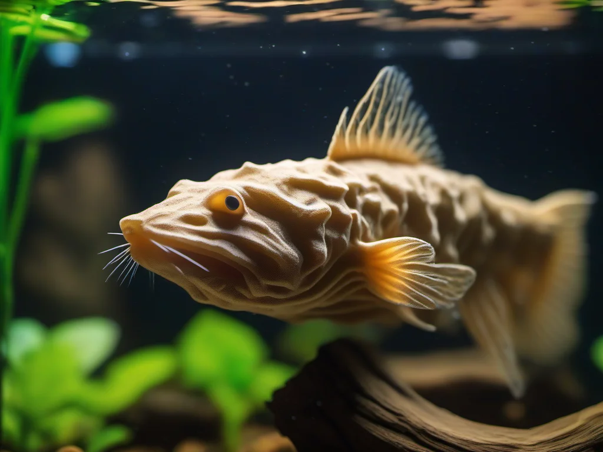

Welse sind aus der Aquaristik nicht wegzudenken. Mit ihren saugnapfartigen Mäulern, den charakteristischen Panzerplatten und dem faszinierenden Verhalten bereichern sie jedes Aquarium. Neben den bekannten Panzerwelsen gibt es eine riesige Vielfalt an Welsarten, die in unseren Aquarien Einzug gehalten haben. Allen voran die Harnischwelse (Loricariidae) mit ihren unzähligen Arten, die unter dem Namen L-Welse bekannt sind. In diesem Guide konzentrieren wir uns auf die beliebtesten Vertreter dieser faszinierenden Familie: Antennenwelse, L-Welse und weitere Harnischwelse, die sich hervorragend für die Aquarienhaltung eignen.

Antennenwelse der Gattung Ancistrus gehören zu den beliebtesten Aquarienfischen überhaupt – und das zu Recht. Sie sind robust, friedlich, zeigen ein interessantes Verhalten und helfen zuverlässig bei der Algenbekämpfung. Ihren Namen verdanken sie den tentakelartigen Auswüchsen am Kopf der Männchen, die an Antennen erinnern.
Antennenwelse sind anspruchslos und verzeihen auch mal den einen oder anderen Pflegefehler. Sie fühlen sich in Becken ab 60 Litern (für Zwergformen) bzw. ab 80–100 Litern für die Standardarten wohl. Die ideale Temperatur liegt bei 22–28 °C. Als Bodenbewohner benötigen sie Versteckmöglichkeiten in Form von Wurzeln, Höhlen oder Felsspalten – besonders wichtig, da sie ihr Revier verteidigen.
Obwohl Antennenwelse als Algenfresser bekannt sind, benötigen sie eine abwechslungsreiche Ernährung:
L-Welse sind Harnischwelse, die noch keinen offiziellen deutschen oder wissenschaftlichen Namen haben und daher mit einer L-Nummer (wie L134, L46, L333) bezeichnet werden. Diese Nummern wurden durch die Fachzeitschrift "Das Aquarium" eingeführt und haben sich weltweit etabliert. Die Familie der Harnischwelse umfasst über 700 Arten – eine unglaubliche Vielfalt an Formen, Farben und Größen.
Der Zebrawels ist der Star unter den L-Welsen. Mit seinem kontrastreichen schwarz-weißen Streifenmuster und der kompakten Größe von 8–10 cm ist er einer der begehrtesten Aquarienfische überhaupt. Er stammt aus dem Rio Xingu in Brasilien und ist in der Natur durch den Bau des Belo-Monte-Staudamms stark bedroht. Die Nachzucht ist daher nicht nur spannend, sondern auch ein wichtiger Beitrag zum Artenschutz.
Ein mittelgroßer Harnischwels mit charakteristischem Leopardenmuster. Mit 10–12 cm Länge ist er kompakt genug für Aquarien ab 80 cm und zeigt ein interessantes Verhalten. Die orange-gelbe Grundfärbung mit schwarzen Punkten macht ihn zu einem Blickfang.
Sehr beliebter L-Wels mit königsblauen Augen und einem beeindruckenden schwarz-gelben Streifenmuster. Wird etwa 10–14 cm groß und ist in der Nachzucht bereits gut etabliert. Ein schöner Pflegling für Aquarien ab 100 cm.
Die goldene Variante des Antennenwelses, teilweise auch als L144 geführt. Mit 8–10 cm Endgröße ideal für kleinere Becken ab 60 Liter. Sehr friedlich und vermehrungsfreudig.
Ein wunderschöner kontrastreicher schwarz-weißer Wels mit feinen weißen Punkten. Wird 10–12 cm groß und benötigt weiches, sauberes Wasser. Die Nachzucht gilt als anspruchsvoll, ist aber erfahrenen Aquarianern durchaus möglich.
Die meisten L-Welse stellen ähnliche Ansprüche an die Haltung. Hier die wichtigsten Eckpunkte:
Eine weitere faszinierende Gruppe innerhalb der Harnischwelse sind die Rhythmus-Nasenwelse. Sie zeichnen sich durch einen extrem langgestreckten, dünnen Körper aus – sie erinnern an kleine Stöckchen oder Äste. Mit 12–15 cm Länge sind sie auffallend schlank und perfekt an das Leben zwischen feinen Wurzeln angepasst.
Zu den bekanntesten Arten gehören Rineloricaria fallax und Rineloricaria lanceolata. Diese Welse sind absolut friedlich, etwas scheuer als Antennenwelse, und benötigen feinen Sand als Bodengrund. Sie vergesellschaften sich hervorragend mit ruhigen Salmlern und Zwergbuntbarschen.
Die Nachzucht von Antennenwelsen ist erstaunlich einfach. L-Welse sind dagegen eine echte Herausforderung und gelingen meist nur unter optimalen Bedingungen.
Antennenwelse sind Höhlenbrüter. Das Männchen besetzt eine Höhle (Tonröhre, Kokosnusshälfte), lockt das Weibchen hinein und bewacht anschließend den Gelege. Nach etwa 5–7 Tagen schlüpfen die Jungfische. Die Aufzucht ist unkompliziert: Futtertabs und überbrühte Gemüsestücke reichen völlig aus.
Für die gezielte Nachzucht von L-Welsen wie L46, L134 oder L333 benötigst du:
Beim Kauf von Antennenwelsen und L-Welsen gibt es einige wichtige Punkte zu beachten:
Welse – ob Antennenwelse, L-Welse oder Rhythmus-Nasenwelse – sind bereichernde Aquarienbewohner, die mit ihrem interessanten Verhalten, ihrer Vielfalt und ihrer Nützlichkeit begeistern. Für Einsteiger sind Antennenwelse die perfekte Wahl: Sie sind robust, pflegeleicht und helfen bei der Algenbekämpfung. Fortgeschrittene Aquarianer werden in der Welt der L-Welse eine schier unendliche Vielfalt entdecken, die immer wieder neue Herausforderungen und Faszination bietet. Mit der richtigen Vorbereitung, ausreichend Platz und einer artgerechten Ernährung wirst du lange Freude an diesen faszinierenden Panzerträgern haben.
Spezielle Futtertabletten mit hohem Pflanzenanteil für Antennenwelse und L-Welse. Sinken sofort zu Boden und liefern alle wichtigen Nährstoffe.
Naturbelassene Moorkienholz-Wurzeln in verschiedenen Größen. Unverzichtbar für die Wels-Haltung – liefert Ballaststoffe und schafft Verstecke.
Keramik- oder Tonhöhlen in verschiedenen Größen als Rückzugsort und Laichplatz für Antennenwelse und L-Welse.
Praktische Edelstahl-Klammer zur Befestigung von Gurke, Zucchini oder Spinat im Aquarium. Saubere Fütterung ohne Futterreste.
* Bei den mit Sternchen gekennzeichneten Links handelt es sich um Affiliate-Links. Wenn du über diese Links einkaufst, erhalten wir eine kleine Provision, ohne dass für dich zusätzliche Kosten entstehen. So unterstützt du unsere Arbeit.
Dieser Guide wurde zuletzt aktualisiert am 4. Juni 2026. Die Amazon-Preise und Verfügbarkeiten können abweichen. Wir empfehlen, vor dem Kauf die aktuellen Produktinformationen auf Amazon zu prüfen.
[ AdSense-Werbefläche ]